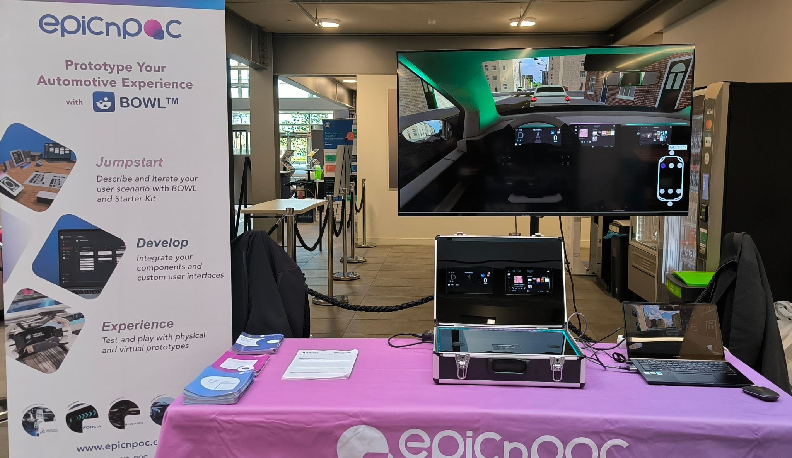
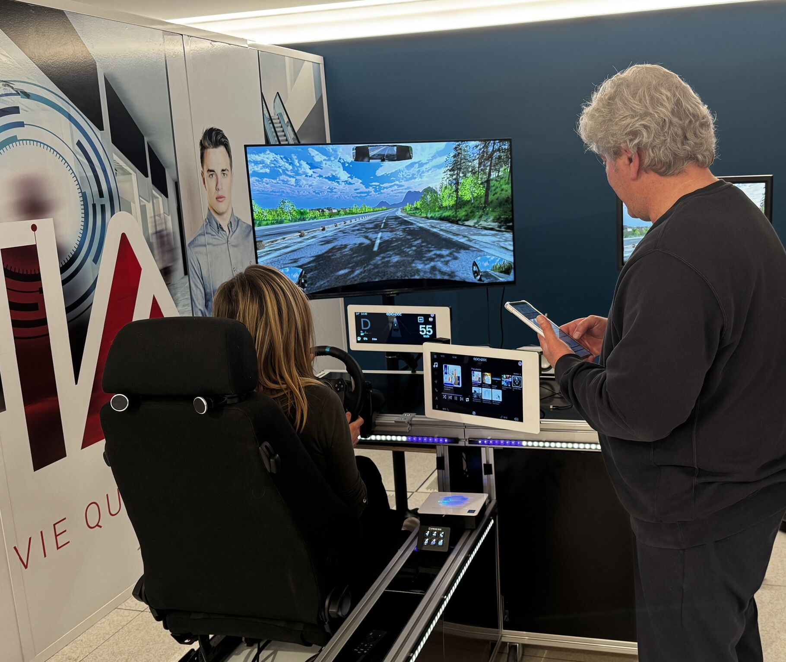

Contexte
Dans le cadre de mon alternance chez EPICNPOC, j’ai conçu un simulateur réaliste destiné à visualiser et tester des prototypes technologiques en environnement virtuel.
Objectifs
- Créer une réplique virtuelle d’un habitacle de voiture.
- Intégrer des routes réalistes via OpenStreetMap.
- Simuler la conduite manuelle et automatique.
- Afficher les GUI/UX développés par l’entreprise.
Technologies Utilisées
Unity 3D (assets optimisés), OpenStreetMap (CityGen3D), JSON pour l’échange de données, et interfaces Logitech pour la conduite.
Méthodologie
- Collecte des besoins et définition des spécifications.
- Développement en sprints avec présentations régulières.
- Tests en conditions réelles, unitaires et de performance.
Résultats
Le simulateur a été intégré avec succès dans les démonstrations clients. Réaliste, performant (>30 fps), et interactif, il a été validé lors de salons professionnels.
🎯 Présentation dans les Salons Tech
Ce projet de simulation automobile est actuellement présenté par EpiCnPoC dans les plus grands salons technologiques :
- CES (Consumer Electronics Show) - Las Vegas
- Maison de l'IA - Showcases d'innovation
- Salons automobiles - Démonstrations professionnelles
Découvrez plus sur EpiCnPoC : LinkedIn EpiCnPoC
Galerie - Présentations en Salon


Le simulateur Virtual Replica présenté par EpiCnPoC lors des salons technologiques
Axes d'Amélioration
- Ajout de météo dynamique
- Mode réalité virtuelle (VR)
- Changer de véhicule en cours de simulation